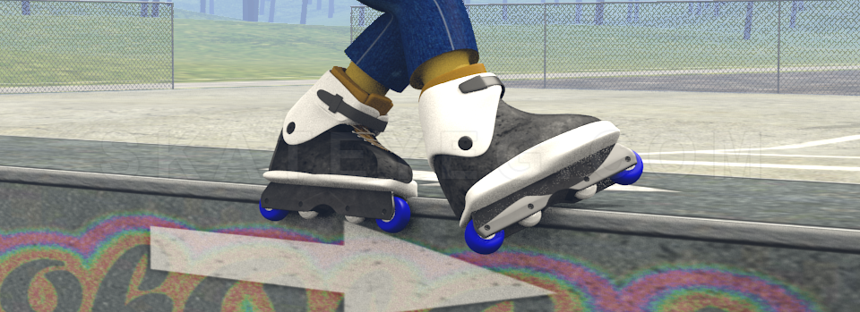
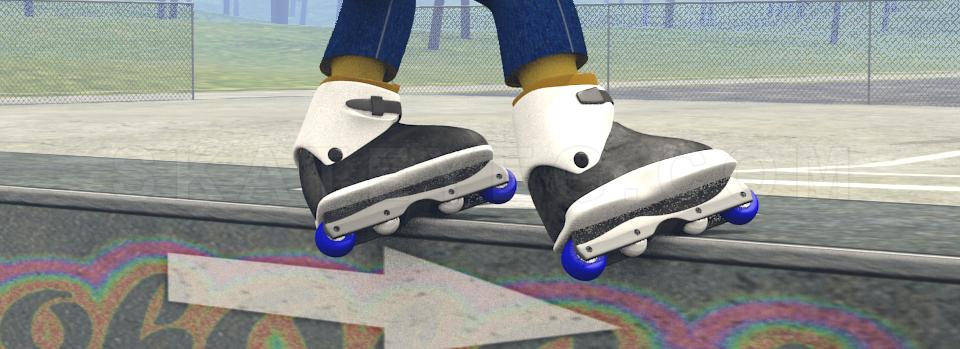
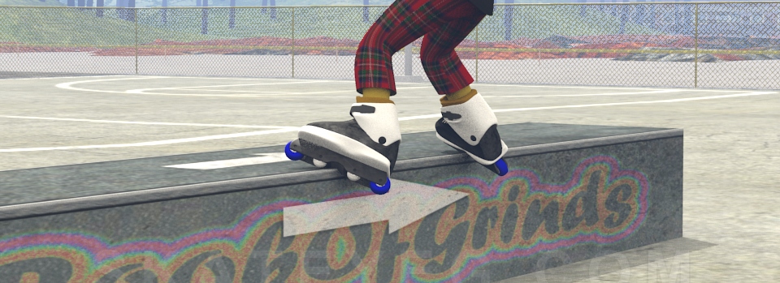
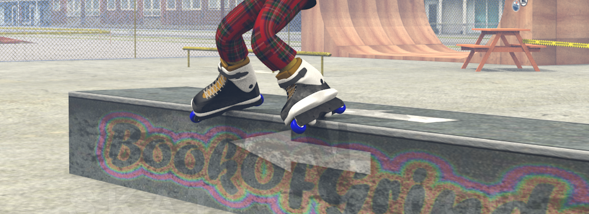
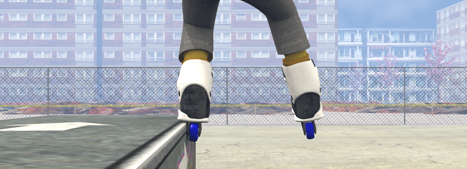
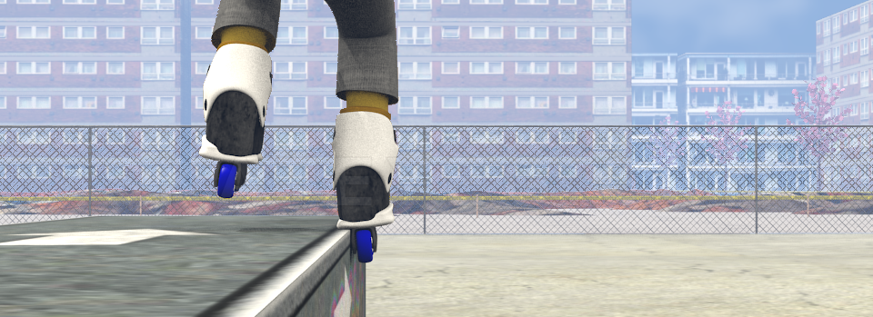
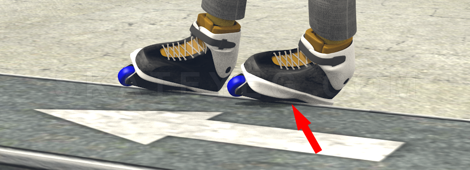
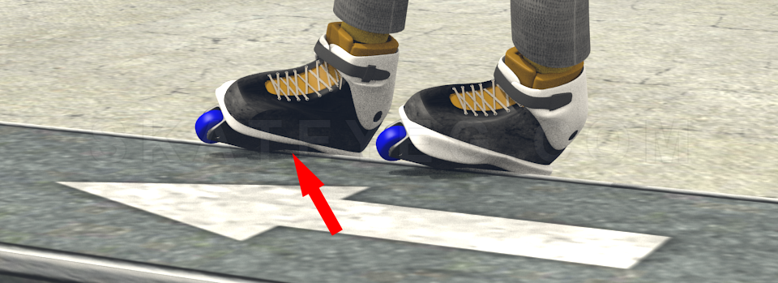
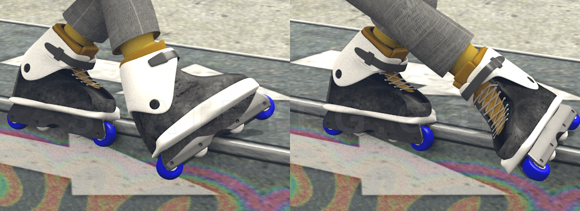
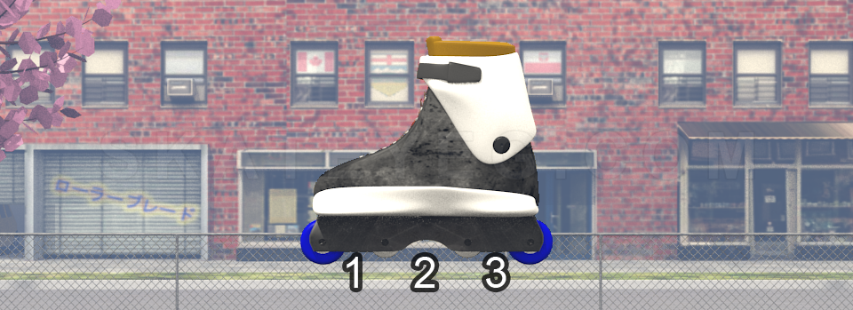

Learn
Skate Position Basics
Throughout this website you will find references to skate positions, here is the dictionary that explains what these positions mean.
The Rule of Soul Plate
In basic distinction between Soul and non-Soul (Groove) grinds we can assume the following:
- Any grind that uses *any part of the Soul plate is considered a Soul grind
- Negative or Positive Soul Plate positions
- Topside variations
- Any Rough or Tough variations with no regard to what the "other" skate is doing.
- Any grind that does not use any part of the Soul plate is considered a Groove grind
- *If you lean into your groove grind enough that you're including your Soul plat (or the groove in your Soul plate) in the grind (i.e. a super low Royale) it is then still considered a Groove grind due to the skate position and grind description.
Soul Grind

A Soul Grind happens when one of your skates is grinding on the Soul Plate. These can have the Positive (generally we don't add that term) or Negative (generally we add that term) positions. See the Positive and Negative section on this page to review that terminology. These can also be done with variations such as Tough or Rough positions: you can see those under the Grinds - Variations section.
Groove Grind (H-Block Grind)

A Groove (or H-Block) Grind happens when the skate or skates are locked on a trick using the Groove in your frame (but not using the Soul plates as they would in Soul Grinds). The side(s) of the Groove you are using and the way you are facing your obstacle will determine the type of trick and whether it is Frontside or Backside (see below).
Backside and Frontside Groove Grinds
All Groove Grinds have a Backside and Frontside position. Generally the "Frontside" keyword is left out of the grind description and is implied when we just say the name of the grind, i.e. a Royale (instead of Frontside Royale), and Backside is generally added, i.e. Backside Royale. The position of the skate takes precedance over the position of your body, meaning that if for some reason you are facing an obstacle but your skate is pointing away from the obstacle you will define the grind by the position of the skate and not your body.
Frontside

This is a Groove Grind where you are facing the obstacle, i.e. your front and the front of the skate(s) is pointing towards the obstacle. The basis of this position is the Frontisde grind and this position then describes all other Frontside Groove Grinds. You will also find this position abreviated as "Front" or "FS".
Backside

This is a Groove Grind where you are facing away from obstacle, i.e. your back and the back of the skate(s) is pointing away from the obstacle. The basis of this position is the Backside grind and this position then describes all other Backside Groove Grinds. You will also find this position abreviated as "Back" or "BS".
Positive and Negative (Inner and Outer) Sides
Positive Soul (Outer)

The Positive Soul (or Outer Soul) side of your Soul Plate is the "normal" way of doing a Soul grind. You will not add that term to your Soul trick. For example you would not say you did a "Positive" Makio, that is already implied and you call it a Makio.
Negative Soul (Inner)

The Negative Soul (or Inner Soul) side of your Soul Plate is a variation to a Soul grind. You would then attach that term to your Soul trick. For example a "Negative" Makio is the variation to the regular Makio.
Positive Groove (Outer)

The Positive Groove (or more commonly Outer Groove) is the same concept as with your Soul Plate but here we are describing the side of the frame you're locking your trick on. For instance on a Royale grind, your back leg is the one that is using the Outer Groove to lock the trick. You will not normally hear this terminology used in Blading, however we use it for some definitions on this website.
Negative Groove (Inner)

The Negative Groove (or more commonly Inner Groove) is the same concept as with your Soul Plate but here we are describing the side of the frame you're locking your trick on. For instance on a Royale grind, your front leg is the one that is using the Inner Groove to lock the trick. You will not normally hear this terminology used in Blading, however we use it for some definitions on this website.
Normal vs Acid Position

The "Normal" Position of your skate that is the "non-Soul" skate (i.e. NOT locked on the Soul Plate) during a Soul Grind can be derived from the Soul grind and what your front leg is doing: essentially the front skate is locked on the Negative Soul/Groove.
When that same skate is "flipped and rotated" and it is locked on the Positive Soul/Groove it is in the Acid Position.
Taking a look at the Soul Grind and the Acid Soul Grind (or commonly called just Acid): the Soul Grind is the "Normal" position and in the Acid Soul the front skate is "on Acid".
In theory then we could apply this to the non-Soul skate if it's in the front or in the back
This terminology is not often used, but in technicality it does make sense and was found to be used in the 1990's (for example the Acid Mizou could be a PStar Grind).
Frame Channels

On a 4 wheel (or 2 wheel and 2 anti-rocker) frame you have 3 channels. These channels are the spaces in between your wheels (or wheel and anti-rocker).
- Starting from the front of the skate between your 1st and 2nd wheel is channel 1.
- Then channel 2 is between the 2nd and 3rd wheel - which is generally your groove/H-Block and the "normal" way of locking your trick; hence you will normally not call it a "channel" trick.
- Lastly channel 3 is between the 3rd and 4th wheel.
Channel tricks are normally only "counted" as such if it is a Groove Grind (i.e. a Frontside grind). If you're doing a Soul trick and your non-soul skate is in a channel other than your groove it's technically "not-a-trick". Channel tricks can be called as channel 11, or channel 33. For instance if you're doing a Frontside grind and both your skates are on channel 1 then it is a channel 11 Frontside.
Suggested Grind Progression
While you can go about learning how to grind any way imaginable, here are a few of our suggestions on how to approach this challenge. We are assuming, of course you can already skate - if not there is lots of material on YouTube that you can review and "learn how to inline skate".
If you want more in-depth material on learning certain tricks or, Aggressive Inline in general, make sure you scroll down to the bottom of this page and check out the Learn on YouTube section for some great channels with amazing content.
Here is a list of the basic grind progression that you can try. Try other grinds after you have a solid understanding on how to do these grinds. We highly recommend that you also start doing all the grinds Switch as soon as possible (i.e. when you got it your regular way, start trying Switch) - this will allow you to grind more objects no matter what side they are on, as well as give you a great opportunity for some fun Switchups when you're ready.
- Makio; then learn:
- Mizou
- Soul
- Acid
- Sidewalk
- PStar
- Frontside; then learn:
- Front Royale
- Front Full Torque
- Front Backslide
- Front Torque
- Unity
- Backside; then learn:
- Back Royale
- Back Full Torque
- Back Backslide
- Back Torque
- Back Unity
Once you have these basic grinds you can then move forward to add Variations to them. Again these are just suggestions but it should be easier to progress to other grinds once you have some of these on lock.
Skating With "Style"
Many skaters (especially Pro Skaters) have their own unique styles. Really the beauty of this (and any other similar sport) is that it is 100% up to you how you develop your style and how you look when you skate.
"Style" is not something we can teach, it's something you develop with time and it will be the outcome of how you skate. We can give you some quick tips to consider when you are exploring Aggressive Inline:
- Get really comfortable with general rollerblading (go for path/fitness skates, and just skate around as much as possible).
- Don't be stiff in your knees and back, loosen up your arms and let them float, feel the air with your open palms.
- Practice your tricks over and over again until they become natural and you're super comfortable with doing them.
- You can choose a path such as Grinds, Airs, Grabs, Spins, or do them all, totally up to you!
- You can do lots of technical things, or big tricks, or you can master your favourite tricks and make them look "sick".
- Be smooth, and have good flow and consistency: this only comes with time - what you put into it is what you will get back!
- Get low on your grinds, tuck your legs when you do air and spins, throw your body into your tricks.
Most of all, HAVE FUN! Keep learning, get comfortable, take your time to get Flow. Never quit :)
Learn on YouTube!
The following is a list of channels (which we found) that provide free instructional and other rollerblading related content. Thank you to all of you for creating this material for the rollerblading community!
If you know of a YouTube channel you would like to suggest to be added to this list send us an E-Mail to skateyeg@gmail.com
Acosta Blades
Language: English
Good tips and explanations on how to do certain tricks and lots of great information for beginners.
|
Aggressive Mall
Language: English
Old but gold content and lots of different tricks explained.
|
Back to Blading
Language: English
Lots of good tips and techniques on learning new tricks, as well as tonnes of indepth gear related discussions and skate reviews.
|
Blade Blog
Language: Russian
На канале вы найдёте видео посвящённые агрессивным роликам: обзоры на стафф, обучение трюкам, DIY и многое другое. Всё это на родном языке!
|
Brandon Drummond
Language: English
Variety of videos, from session (progression) videos, learning new tricks, banging out whole lists of different tricks, and also tips and ideas about what tricks to learn and how to do them.
|
Felipe Zambardino
Language: Brazilian Portuguese
Felipe Zambardino é um patinador profissional do Brasil com um canal com vários vídeos ensinando desde os primeiros passos na patinação até manobras de street em corrimão
|
Ricardo Lino
Language: English
Huge collection of rollerblading related vidoes which include tutorials, gear talk, competition coverage and much more.
|
pogo SK8
Language: Deutsch
Kleiner wachsender YT Kanal zu den Bereichen Aggressive- und Urbanskaten im Allgemeinen. Hier finden sich einige Grind, Slide- und Anfängerlektionen in deutscher Sprache, teilweise englisch untertitelt.
|
Shop Task
Language: English
Canadian content on Flow skating, and other skating tips and tricks. There are lots of videos featuring Shawn Unwin who is a creative and dedicated rollerblader.
|
|